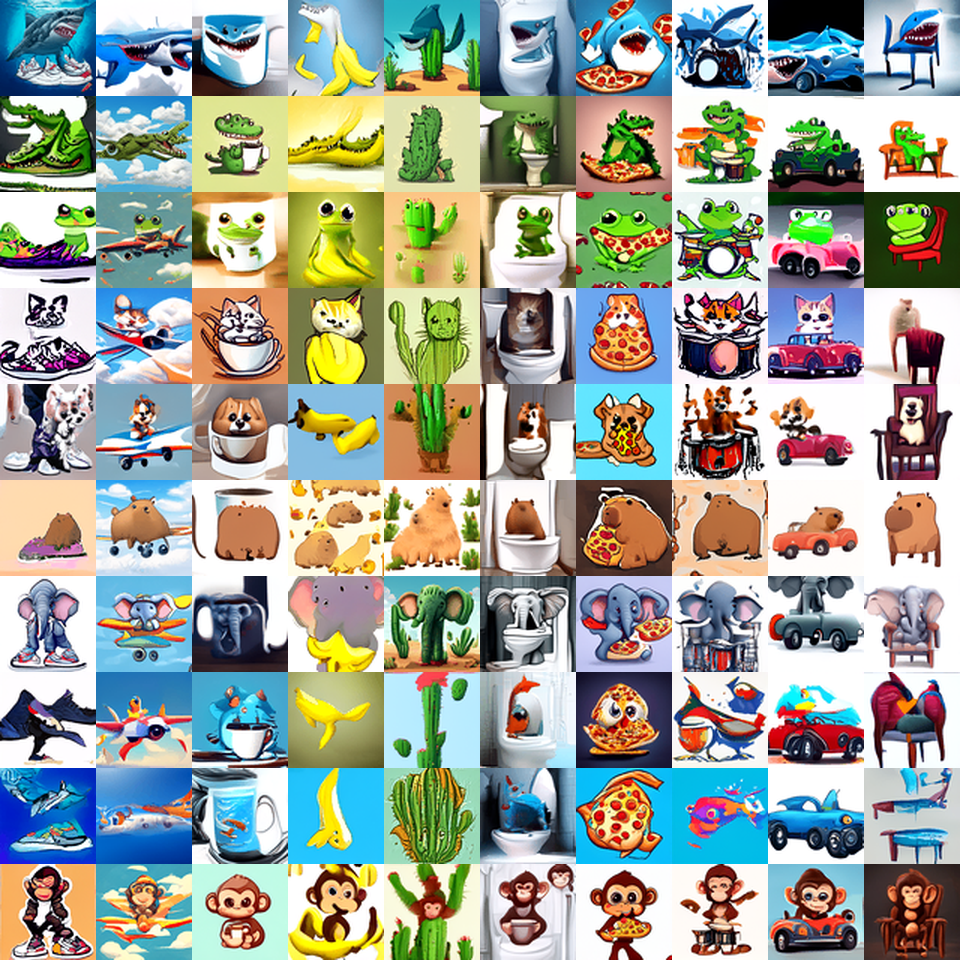

從零實作的 Conditional EDM 擴散模型Conditional EDM Diffusion, Built from Scratch
64×64、以 CLIP 為條件的「動物 × 物件」圖像生成。UNet、EDM preconditioning、Heun sampler、訓練迴圈與 EMA 都是自己寫的，沒有用預訓練生成權重或現成的 diffusion 套件；frozen CLIP ViT-B/32 只用於條件與評分。64×64 image generation conditioned on (animal, object) prompts via CLIP. The UNet, EDM preconditioning, Heun sampler, training loop, and EMA are all hand-written — no pretrained generative weights, no diffusion libraries. A frozen CLIP ViT-B/32 is used only for conditioning and scoring.

01這個專案在做什麼What this project does
給一組「動物 × 物件」的文字提示（例如 shark + sneaker），模型要生成一張 64×64 影像，把兩個主體都畫進同一張圖。共 100 組提示、每組交 20 張，由評測伺服器對隱藏測試集以 FID（分佈相似度）與 CLIP-T（圖文對齊）各佔一半計分。規則限制 diffusion 骨幹必須完全從零訓練，不能用任何預訓練生成模型——所以這個專案的重點就是：整套 diffusion 系統自己寫、自己調到能贏。Given an (animal, object) text prompt (e.g. shark + sneaker), the model generates a 64×64 image rendering both subjects together. 100 prompt pairs, 20 images each, scored 50/50 on FID (distributional fidelity) and CLIP-T (text–image alignment) by an evaluation server against a hidden test set. The rules require the diffusion backbone to be trained fully from scratch — no pretrained generative models — so the point of this project is building and tuning the whole diffusion system by hand.
02怎麼做How it works
1UNet 骨幹UNet backbonemodel.py
0.25·ln σ → Fourier features → MLP 編碼。ADM/EDM-style UNet, ~54M params: GroupNorm + SiLU + Conv residual blocks with AdaGN predicting scale/shift from the combined time and condition embedding. Channels 128→256→384→512 across resolutions 64/32/16/8, self-attention at 16 and 8. Noise level embedded as 0.25·ln σ → Fourier features → MLP.2EDM preconditioningedm.py
ln σ ~ N(-1.2, 1.2²)）。sigma_data 直接在訓練資料上量測（= 0.6311），不用假設值。取樣用 Heun 二階 solver、Karras σ 排程（ρ=7）。另有 sanity gate：把解析最優 denoiser 推過同一條取樣迴圈，確認 preconditioning 與 solver 正確。Karras/EDM setup (ln σ ~ N(-1.2, 1.2²)), with sigma_data measured on the training set (0.6311) rather than assumed. Sampling uses the 2nd-order Heun solver on the Karras σ schedule (ρ=7). A sanity gate pushes an analytic Bayes-optimal denoiser through the same sampling loop to verify preconditioning and solver.3條件與 CFG 訓練Conditioning & CFG trainingtrain.py
4多組 guidance 取樣Multi-guidance oversamplingsample.py
w ∈ {2, 3, 4, 5, 6, 8} 各取樣一批進候選池：高 w 有利 CLIP-T 對齊，低 w 有利多樣性（FID）。Each pair is oversampled at guidance scales w ∈ {2, 3, 4, 5, 6, 8} into a candidate pool: high w favors CLIP-T alignment, low w favors diversity (FID).5FID-aware 挑選FID-aware selectionselect.py
server ≈ 0.93·proxy + 8.6：offline 20.78 → 預測 27.9，實際 27.88。20 images per pair are chosen by within-pair swaps that minimize a diagonal FID proxy toward the training distribution, subject to a mean CLIP-T floor. The proxy calibration server ≈ 0.93·proxy + 8.6 predicted 27.9 from an offline 20.78; the server returned 27.88.03Guidance 的取捨The guidance tradeoff
04結果Results
| Metric | 成績Score | 最強參考 baselineStrongest reference baseline |
|---|---|---|
| FID (↓) | 27.88 | ≤ 49.25 |
| CLIP-T (↑) | 0.2800 | ≥ 0.2703 |
| Memorization | 最小 cosine 距離 0.051 · 0/2,000 低於門檻 0.02min cosine distance 0.051 · 0/2,000 below the 0.02 threshold | — |
兩項指標都超過最強參考 baseline，提交排名第 1。最近鄰稽核確認輸出不是訓練影像的複製。Both metrics clear the strongest reference baseline; the submission ranked 1st. A nearest-neighbour audit confirms the outputs are not near-duplicates of training images.